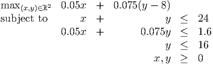

- a.
- If we have more resources than products then it is unlikely that there exists a
production program that uses up all of the resources. For example, consider the
problem:
There is no point that satisfies all three constraints at equality. Exactly two of the three resources are used up at the points (1, 4), (4, 1). There is no feasible production plan that satisfies both of the first two constraints at equality.
- b.
- Consider the problem
The unique point that uses up all the resources is (x1,x2) = (2, 2), but the optimal solution is (x1,x2) = (0, 3).

As total study time drops below 12,
the upper diagonal constraint is pushed
down.
When the right hand side is 7,
the constraint only just touches
the blue region.
Problem is infeasible if fewer than
7 hours are available.
hours are available.

- a.
- Let y be the number of hours per day spent on school. The expected change in the
average grade is 0.125 × (y - 8). The corresponding change in the probability of success
is
which gives the objective function.
The overall GPA can not go higher than 4.0, so it cannot increase by more than 1, so the largest possible value for y is 16.
We also impose a constraint that the resulting probability is no larger than 1 (optional).
 - b.
-

He can increase the probability to 1 by using allocation A: x = 8, y = 16. This leaves 0 hours for eating, sleeping, etc.
- c.
- Eg: put a different upper bound on x + y. Make the tradeoffs nonlinear.